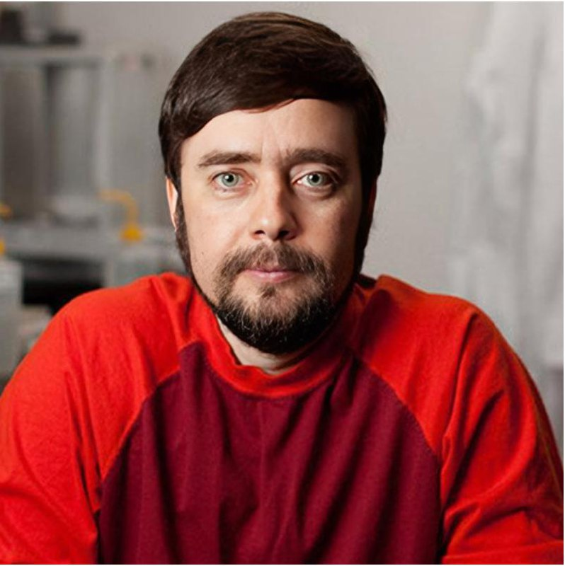

QSense · Biophotonic sensor array · Measuring ultra-weak photon emissions from living tissue
HelioFlux
Your cells emit light. We learned to read it.
No blood draw. No biopsy. No radiation.
The Problem
Most cancers are only visible after years of silent growth, when treatment is harder and outcomes drop.
Standard imaging can't see a tumor until it reaches ~1 billion cells — after years of silent growth.
Routine screening exists for only 5 cancer types. 200+ have no standard screening at all.
Source: American Cancer Society, Cancer Statistics 2026
Our Solution
QSense captures the signal. LuminAI reads it. No needles. No radiation. About 15 minutes.

Cell Progression Diagram
Healthy → 5–10M cells → Detectable Late → Metastasis
Image coming — replacing with Canva export
Detection Stage Timeline
Normal → Precancerous (HelioFlux 5–10M) → Stage I–II (Liquid Biopsy 50–100M) → Stage III–IV (Imaging 1B+)
Image coming — replacing with Canva export
How It Works
Every living cell continuously releases ultra-weak photons — no dye, no contrast, no radiation needed. The signal is already there.
Photomultiplier tubes detect light at single-photon sensitivity — the same technology used in particle physics, now adapted for biological tissue measurement. Non-invasive. Approximately 15 minutes. No radiation, no contrast agents.
Healthy and malignant tissue emit measurably different signatures. That difference has been validated at 90–92% discriminant accuracy across 13 cell lines in two peer-reviewed studies.
The emission signature · 2018 published study
↑ Healthy tissue
Healthy cells produce a consistent, measurable emission profile. The warm ribbon represents this signature — reproducible across cell types.
↓ Malignant tissue
Cancer cells produce an inverted profile. That reversal — measurable without needles, scans, or contrast agents — is the signal HelioFlux reads.
By the time medicine finds it,
it's been growing for two years.
In animal models, HelioFlux found it
within 24 hours.
Cancers (MDPI), 2020 · 47 animal models · 13 cancer types
But at this stage, survival rates are highest and treatment is simplest.
By the time that peppercorn becomes a pea — 1 billion cells, roughly 1 centimeter — medicine can finally see it. But that growth took 1.5 to 2 years. Years where the tumor was doubling silently, potentially reaching lymph nodes, quietly shifting from treatable to dangerous.
HelioFlux doesn't wait for the pea. We're built to find the peppercorn.
Published data · Cancers (MDPI), 2020
In the 2020 study, HelioFlux detected tumor cells in living mice within 24 hours of injection — 18 days before any tumor became palpable, across 13 cell lines.
Non-invasive. No imaging. No contrast agent. No biopsy. No blood draw.
What It Can Detect
Biochemistry & Biophysics Reports (Elsevier), 2018 · Cancers (MDPI), 2020
In the 2020 in vivo study, HelioFlux detected melanoma (B16F10) in 47 living mice within 24 hours of injection — 18 days before tumors became palpable. Validated in vitro across 13 cancer cell lines: 92% discriminant accuracy, 100% detection rate.
Also being explored for treatment response monitoring — tracking how tumor cells respond to therapy in real time.
iScience (Cell Press), 2025 · 20 human subjects · EEG cross-validated
The world's first photoencephalography — reading brain cellular activity through photon emission in living humans, without EEG gel, electrodes, or radiation. Cross-validated against EEG in 20 subjects and published in iScience (Cell Press).
The same sensor is now being used to track chemotherapy-induced cognitive impairment — chemo brain affects up to 75% of cancer patients, and no non-invasive detection method currently exists. Dr. Murugan is collaborating with a medical oncologist to monitor patients through a full treatment cycle.
Ultra-weak photon emissions are a direct readout of cellular metabolism — driven by mitochondrial activity and reactive oxygen species. Disrupted UPE signatures are a known marker of oxidative stress, which underlies type 2 diabetes, cardiovascular disease, and autoimmune conditions.
The same non-invasive platform that reads cancer and brain signals may offer a window into systemic metabolic health — without blood draws, biopsies, or radiation. A research frontier still being mapped.
Oxidative stress · Metabolic monitoring · Treatment response · Systemic inflammation
The Team

"Our goal is to develop a safe, inexpensive technique to detect cancer and treatment-related dysfunctions as early as possible so survivors live longer with better quality of life. This is frontier research with the potential to transform medicine."
Dr. Nirosha Murugan · Wilfrid Laurier University
Dr. Nirosha J. Murugan is Canada Research Chair in Tissue Biophysics and a Faculty of Science Distinguished Research Chair at Wilfrid Laurier University, where she leads a multidisciplinary research program investigating the physical basis of life. As an applied biophysicist, her work explores how structured physical signals — light, voltage, and magnetism — govern cellular plasticity, tissue regeneration, and the reversal of disease states. Her research spans cancer biology, regenerative medicine, neuroscience, and quantum biology, with over 40 peer-reviewed publications in journals including Science Advances and Nature Reviews Bioengineering.
She earned her Ph.D. in Biomolecular Sciences at Laurentian University, where she pioneered the quantum-sensor-based cancer detection technology now commercialized through HelioFlux. As a Principal Investigator and postdoctoral fellow at the Allen Discovery Center at Tufts University — in Dr. Michael Levin's lab — she advanced ion-channel bioelectricity as a mechanism of tissue patterning and co-developed, with Dr. David Kaplan, a drug delivery system to induce limb regeneration in non-regenerative species. She later trained as a fellow at the Harvard Wyss Institute.
A former Harvard teaching fellow, Dr. Murugan is deeply committed to mentorship and to making biophysics accessible to the next generation of health innovators.
Awards & Recognition
Leadership
Scientific Advisory Board

What the World Is Saying
Published Research
In their words
"The very first finding is that photons are coming out of the head — full stop. It's independent, it's not spurious, it's not random."
Dr. Nirosha Murugan — Scientific American, June 2025
"This is a very intriguing and potentially groundbreaking approach for measuring brain activity."
Dr. Michael Gramlich, Biophysicist, Auburn University — Scientific American
"Plants give off light. Shrimp give off light. Literally everything that is alive emits light. And what about us humans?"
Dr. Nirosha Murugan — NPR Radiolab, "The Spark of Life," September 2025
Getting to Market
3 peer-reviewed papers. 47 animal models. 20 human subjects. 13 cancer cell lines. Published in Elsevier, MDPI, and Cell Press.
Bridge round funding human pilot data collection. Expanding from animal models to clinical human validation across multiple cancer types.
FDA de novo pathway. Non-invasive diagnostic device classification. Patent pending.
Point-of-care cancer screening in oncology, dermatology, and primary care settings. No infrastructure changes required.
Global cancer screening and early detection market: $200B+ · HelioFlux targets the earliest possible point of intervention.
Per-test fee through clinical partnerships, with device placement in oncology, dermatology, and primary care settings. No radiation infrastructure required.
Unlike liquid biopsy (blood draw, ~$950/test) or whole-body MRI ($1,200+), HelioFlux requires no biological sample, no radiation, and targets detection at a fraction of the cell count.
Let's Talk
HelioFlux is raising a bridge round to complete our human pilot data and deploy in clinical settings. If the science moves you, let's talk.
Bridge round open. Human pilot data is the next milestone. Early entry positions are available.
Pilot program for dermatology, oncology, and cancer screening centers. No infrastructure changes required.
ARPA-H, SBIR, and academic collaboration opportunities. Nirosha's lab at Wilfrid Laurier is actively seeking co-investigators.
Scientific American, NPR Radiolab, CBC News, and Cell Press have all covered this work. Inquiries welcome.